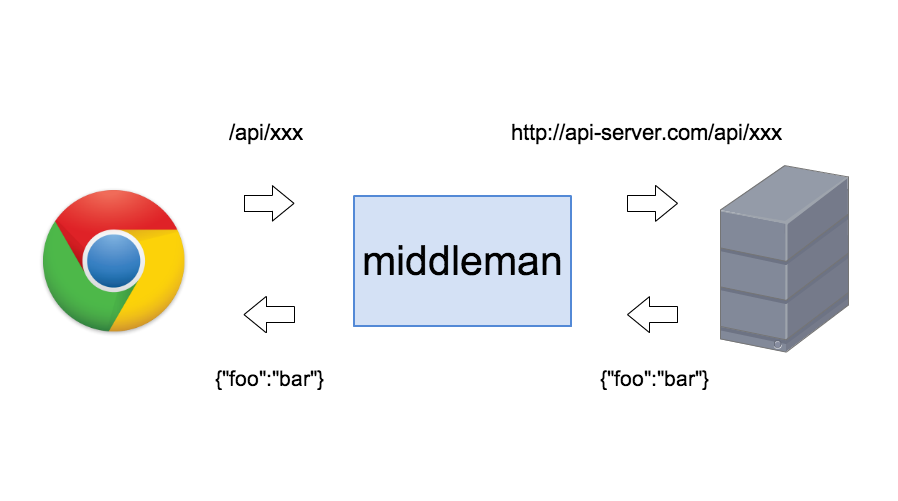

BUILD_DIR = 'build/2013'
DEPLOY_DIR = 'deploy'
DEPLOY_BRANCH = 'master'
DEPLOY_REPOSITORY = 'git@github.com:nodefest/nodefest.github.com.git'
module.exports = (grunt) ->
grunt.task.loadNpmTasks 'assemble'
grunt.task.loadNpmTasks 'grunt-contrib-sass'
grunt.task.loadNpmTasks 'grunt-contrib-copy'
grunt.task.loadNpmTasks 'grunt-contrib-clean'
grunt.task.loadNpmTasks 'grunt-contrib-connect'
grunt.task.loadNpmTasks 'grunt-contrib-watch'
grunt.loadTasks 'tasks'
grunt.initConfig
assemble:
options:
socketServer: process.env['SOCKET_HOST'] || 'nodefest2013.c.node-ninja.com:80'
partials: 'src/partials/*.hbs'
data: 'data/*.yml'
dist:
expand: true
cwd: 'src/tmpls'
src: '*.hbs'
dest: BUILD_DIR
sass:
options:
bundleExec: true
dist:
files: [
src: 'src/scss/style.scss'
dest: "#{BUILD_DIR}/assets/css/style.css"
]
copy:
static:
expand: true
cwd: 'src/static'
src: '**/*'
dest: BUILD_DIR
deploy:
expand: true
cwd: BUILD_DIR
src: ['**/*', '!**/_**/*', '!**/_*'] # ignore files start with underscore.
dest: "#{DEPLOY_DIR}/2013"
clean: [BUILD_DIR]
connect:
server:
options:
port: process.env.PORT || 3000
base: './build'
watch:
assemble:
files: ['data/*', 'src/tmpls/*', 'src/partials/*']
tasks: 'assemble'
sass:
files: 'src/scss/*'
tasks: 'sass'
copy:
files: 'src/static/**/*'
tasks: 'copy:static'
setup:
repository: DEPLOY_REPOSITORY
branch: DEPLOY_BRANCH
dir: DEPLOY_DIR
deploy:
#dryrun: true
branch: DEPLOY_BRANCH
dir: DEPLOY_DIR
message: 'Update 2013 with <%= sha1 %>'
grunt.registerTask 'build', ['clean', 'sass', 'assemble', 'copy:static']
grunt.registerTask 'server', ['build', 'connect', 'watch']
grunt.registerTask 'publish', ['setup', 'build', 'copy:deploy', 'deploy']
grunt.registerTask 'default', ['build']configure :development do
set :debug_assets, true
end
configure :build do
activate :minify_javascript
end※ただし本番でもAPIとJSのオリジンが異なるならこれでもよい
require 'rack/reverse_proxy'
use Rack::ReverseProxy do
reverse_proxy '/api', 'http://api-server.com/'
end
Middlemanをフロントエンドの開発構築に使うと